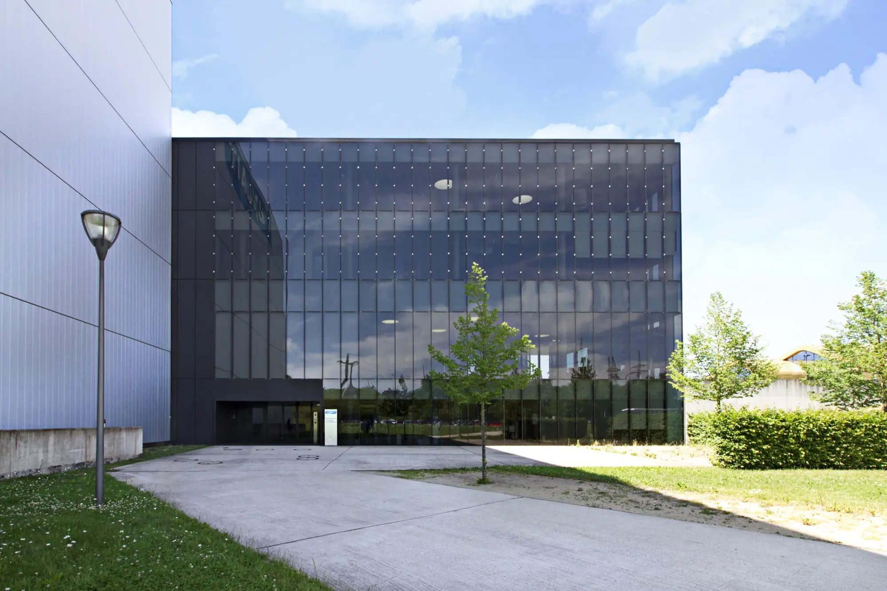
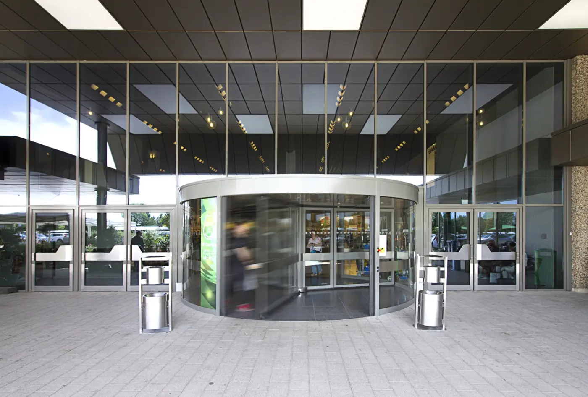
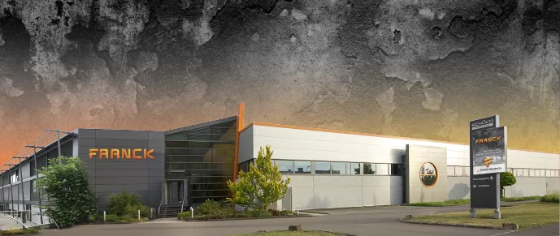

Constructions métalliques · Bissen · depuis 1957
Nous façonnons le métal et le verre de vos bâtiments.
Murs rideaux, menuiseries aluminium, escaliers, garde-corps, Sky-Frame. Nous étudions, nous fabriquons dans nos ateliers de Bissen et nous posons avec nos propres équipes.
- Fondée
- 1957, Bissen
- Ateliers
- 2 × 1 200 m²
- Équipe
- 30 collaborateurs
- Partenaires
- Schüco · Jansen · Sky-Frame
- Premium Partner Schüco
- Premium Partner Jansen
- Distributeur officiel Sky-Frame
- Fabrication CNC, à Bissen
Huit savoir-faire, une seule équipe.
Choisissez un matériau : ce que nous réalisons, et des chantiers que nous avons livrés.

01 / 08
Aluminium

La référence luxembourgeoise de la menuiserie métallique.
Depuis 1957, Franck S.A. garantit aux maîtres d'ouvrage une gamme complète de produits parfaitement adaptés entre eux. Un seul interlocuteur, de la première esquisse à la maintenance.
De l'étude au montage, rien ne sort de chez nous.
- 01
Études et conception
Nos techniciens conçoivent chaque projet sur mesure, sur des postes CAD modernes.
- 02
Production
Deux ateliers séparés de 1 200 m² chacun, équipés de machines à commande numérique pour l'aluminium, l'acier, l'inox et la tôle.
- 03
Montage
Nos propres équipes de pose, pour un service compétent, performant et une qualité optimale.
- 04
Maintenance
Entretien des portes coupe-feu, coupe-fumée et anti-panique, et réparations ponctuelles.
Ils nous ont confié leurs façades.
De la grange familiale aux ateliers de Klengbousbierg.
- 1957
Marcel Franck aménage son premier atelier dans la grange de la maison parentale, à Bissen.
- 1958
Début de la construction d'un nouvel atelier.
- 1960
La ferronnerie Franck, aussi maréchal-ferrant, engage son premier apprenti.
- 1961
Démarrage des fenêtres en aluminium et de la serrurerie de bâtiment. Partenariat avec Schüco.
- 1963
Un atelier dédié à la fabrication de châssis en aluminium.
- 1978
Annexe avec bureau et salle d'exposition.
- 1991
Création de Constructions métalliques Franck Sàrl.
- 2004
Label « Premium Partner » Schüco et Jansen. Revendeur Sky-Frame.
- 2007
Déménagement dans les nouveaux ateliers et bureaux de la zone Klengbousbierg.
- 2014
La société devient Franck S.A.
- 2017
Nouvelle identité visuelle et 60 ans de la maison.
30 personnes font notre réputation. Pourquoi pas vous ?
Ouvrier ou employé, chevronné ou débutant : nous étudions chaque candidature avec l'attention qu'elle mérite.
Envoyer ma candidature- PoseSerrurier poseur
- AtelierSerrurier en fabrication
- Bureau d'étudesTechnicien en serrurerie
- Bureau d'étudesTechnicien en menuiserie métallique
Parlons de votre projet.
Décrivez-le en quelques clics. Un technicien vous recontacte pour fixer un rendez-vous.
- Adresse5, z.a.c. Klengbousbierg
L-7795 Bissen - Téléphone+352 83 50 51
- Fax+352 83 57 93
- E-mailinfo@franck-bissen.lu